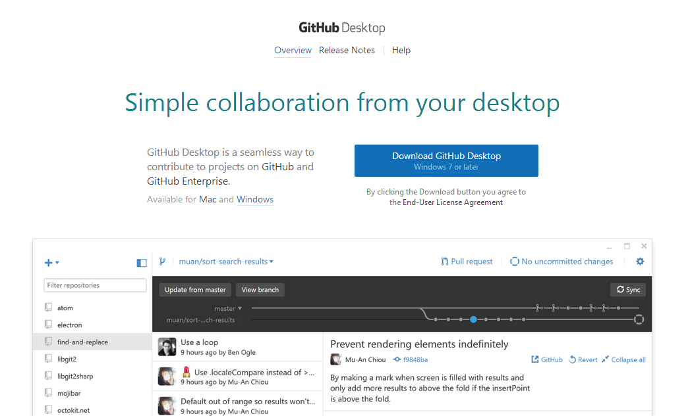
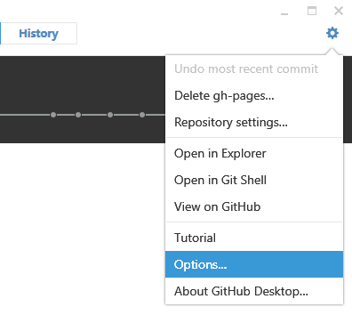
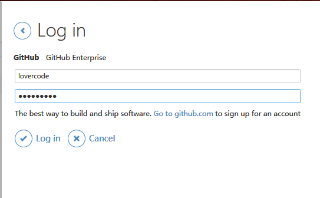
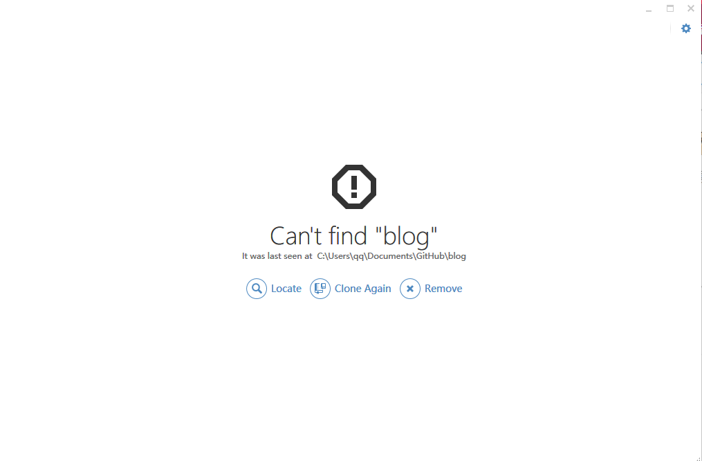
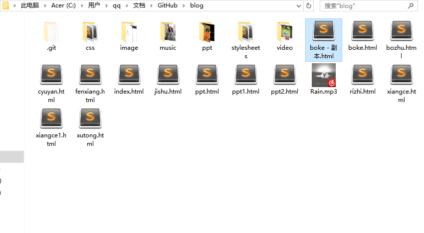
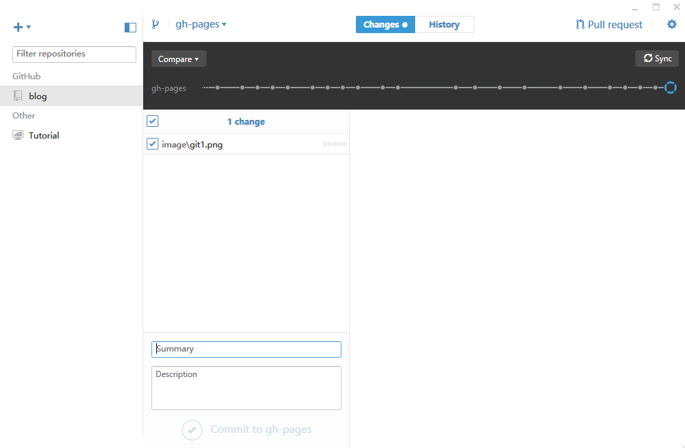

--程序员的修炼手册
注意：此教程只是用来将自己的博客放到github上，让别人可以访问，跟网页制作作业无关
1,当然是访问https://desktop.github.com/了，点击download就不说了，下载是网速可能会很慢（反正我是这样，先下载的是个安装程序，然后再下载github的）
登录名可以是绑定的邮件，也可以是用户名（打开客户端，找到设置，有个option。。找到log in就可以登录了）
。。。
进去应该会出现这样，如果不是请找到clone这个单词，意思不用多说了
你的文件就同步到本地了（我的默认路径和文件是这样）
现在你可以用自己的敲代码工具修改文件夹下的博客代码了，修改后打开客户端会自动显示修改内容，（比如我要上传一张照片就是这样）注意：那个summary必须填写，就是对你的修改的描述，然后点击下面的勾，然后点击右上角的sync，这样你的修改就同步到服务器了
